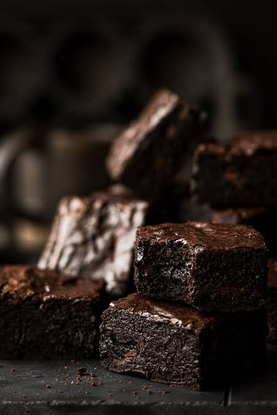

"Welcome to Eshal's Bakistry! We believe that the best memories are made around the table, shared over sweet treats and artisanal bakes. From our oven to your hands, everything we create is crafted from scratch using the finest ingredients. Whether you are looking for your morning pastry, a show-stopping celebratory cake, or just a little afternoon comfort, we have something fresh waiting for you."